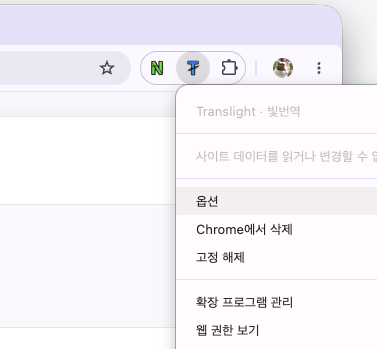
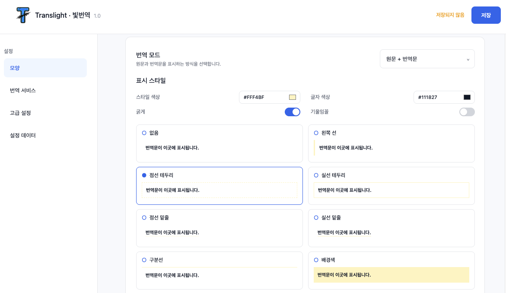

Translight · 빛번역
옵션 설정

Translight · 빛번역의 번역 모드와 표시 스타일은 옵션 페이지에서 변경할 수 있습니다.
설정 방법
-
Translight · 빛번역 아이콘에 우클릭 해 옵션을 선택합니다.

-
바꾸고 싶은 옵션으로 설정 후 상단의 저장을 눌러주세요.

- 영어로 된 웹사이트에서 T 아이콘을 누르면 바로 번역됩니다.
옵션을 변경하면 새로고침 할 필요 없이 열려있는 브라우저에 모두 자동으로 적용됩니다.